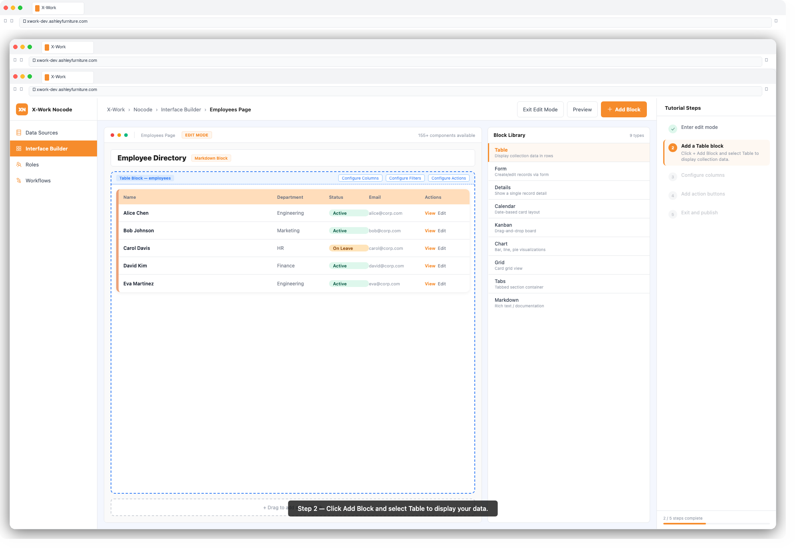
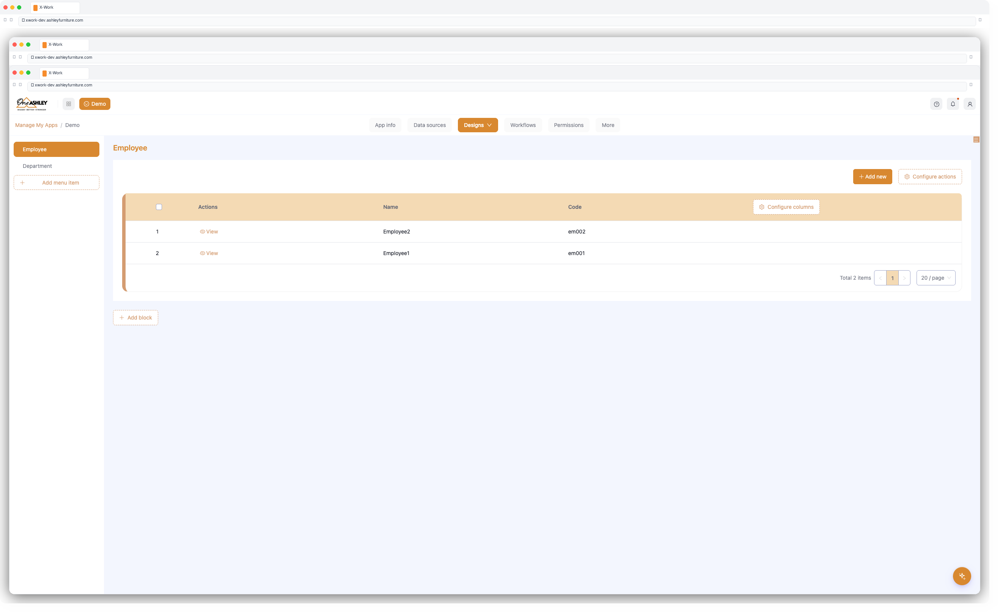
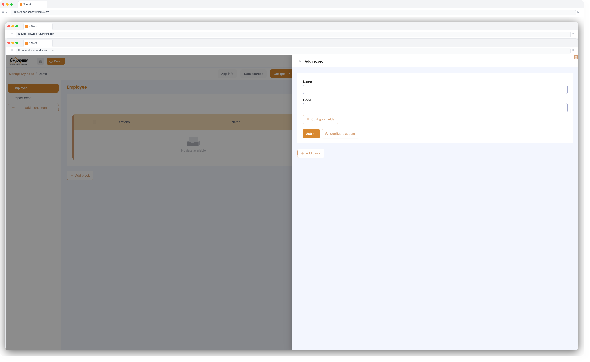
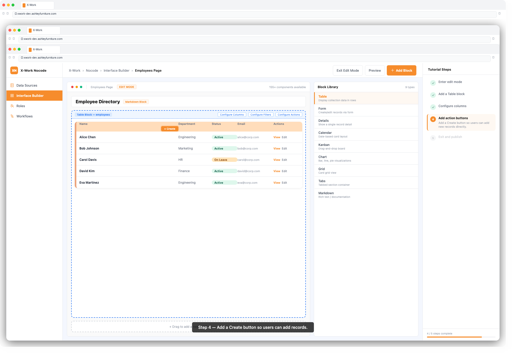

The Interface Builder lets you design fully custom application screens using a visual, block-based editor. No frontend coding is required. You drag blocks onto a page canvas, bind them to your data, configure how they look and behave, and publish — your team sees the result immediately.
| Term | Meaning |
|---|---|
| Page | A screen in your application, accessed via a route/URL |
| Block | A self-contained UI component placed on a page (table, form, chart, etc.) |
| Action | A button or trigger that performs an operation (save, delete, export, etc.) |
| Schema | The structured definition of a page and its blocks, stored in the database |
| Template | A reusable block or page layout that can be applied across multiple pages |
1. In the left navigation, click + next to Pages (or open the page management panel)
2. Click Add Page
3. Enter a Page Title and optionally set a URL path
4. Click Confirm
5. The page opens in Edit Mode (indicated by the pencil icon in the top-right)
1. With Edit Mode active, click + Add Block in the center of the canvas or at the top of the page
2. A block picker panel appears — choose from:
| Block | Best For |
|---|---|
| Table | Displaying lists of records with sorting, filtering, pagination |
| Form | Entering or editing a single record |
| Details | Viewing a single record read-only |
| Calendar | Displaying date-based records on a calendar |
| Kanban | Visualizing records by status/category in columns |
| Gantt | Project timeline visualization |
| Map | Geolocation data display |
| Chart | Bar, line, pie, and other data visualizations |
| Grid | Layout container for arranging other blocks side-by-side |
| Tabs | Tabbed layout container |
| Markdown | Static rich-text content |

3. After selecting a block type, choose the Collection (data source) it connects to
4. Click Confirm — the block appears on the canvas
1. Hover over the block and click the settings icon (gear/wrench) in the top-right corner of the block
2. Configure Columns:
3. Configure Filters:
Status = Active)4. Configure Sorting:
5. Set Page Size:

1. Open block settings → Configure Fields
2. Toggle fields on/off, drag to reorder
3. Set field display options:
4. Configure Form Layout: single-column, two-column, or custom grid
Actions are buttons that appear in blocks (table toolbar, form footer, or detail view).
1. Open block settings → Configure Actions
2. Click + Add Action and choose an action type:
| Action | What It Does |
|---|---|
| Create | Opens a form to add a new record |
| Edit | Opens a form to edit the selected record |
| Delete | Deletes the selected record (with confirmation) |
| Save | Saves a form submission |
| Submit | Submits the form (triggers workflow if connected) |
| Export | Exports table data to Excel/CSV |
| Import | Imports records from Excel/CSV |
| Bulk Edit | Edit multiple selected records at once |
| Bulk Delete | Delete multiple selected records at once |
| Prints the current view | |
| Custom Request | Calls a custom API endpoint |
| Open Popup | Opens a drawer/dialog with another block inside |
| Trigger Workflow | Manually starts a connected workflow |
3. Configure each action:
4. Drag actions to reorder them in the toolbar


Grid (side-by-side blocks):
1. Add a Grid block to the page
2. Click inside the grid to add sub-blocks into each column
3. Drag the column divider to adjust widths
Tabs:
1. Add a Tabs block to the page
2. Click + Add Tab and name each tab
3. Add blocks inside each tab panel independently
To save a block as a reusable template:
1. Hover over the block → open settings → Save as Template
2. Enter a template name and category
3. Click Save
To apply a saved template:
1. Click + Add Block → From Template
2. Select the template from the library
3. Click Confirm
1. Click the Preview button (eye icon) to see how the page looks to end users
2. When satisfied, click Exit Edit Mode — changes are saved and live immediately
3. Share the page URL with your team
| Issue | Solution |
|---|---|
| Block shows no data | Check the collection binding and ensure the data source has records |
| Action button missing | Confirm the action is toggled on in Configure Actions |
| Column not showing | Check Configure Columns — the field may be toggled off |
| Form field not editable | The field may be set to Read-only; check field settings |
| Page not loading | Verify the page route and user role has access to this page |